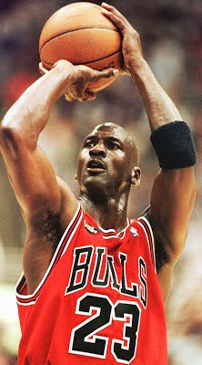
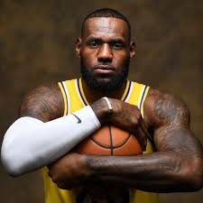
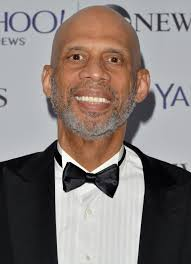

MEJORES JUGADORES DE LA NBA
- Michael Jeffrey Jordan
) es un exjugador de baloncesto estadounidense. En la actualidad es propietario del equipo de la NBA los Charlotte Hornets.2
Es considerado por la mayoría de aficionados y especialistas como el mejor jugador de baloncesto de todos los tiempos.3
Se retiró definitivamente en 2003 en los Washington Wizards, tras haberlo hecho en dos ocasiones anteriores, en 1993 y 1999,
después de haber jugado 13 temporadas en los Chicago Bulls.

- LeBron Raymone James
) es un jugador de baloncesto estadounidense que actualmente pertenece a la plantilla de Los Angeles Lakers de la NBA.
Con 2,06 metros de estatura, su posición es la de alero, pero su talento, versatilidad y poderío físico le permiten jugar
tanto de base como de ala-pívot.1 James es considerado como uno de los mejores jugadores de baloncesto del mundo y de la historia.2
Cuando James se proclamó tres veces Mr. Basketball en Ohio durante el instituto, y apenas cursaba su temporada sophomore en
St. Vincent–St. Mary High School, ya era considerado por los medios de comunicación como la futura gran estrella de la NBA.
Firmó un contrato de 90 millones de dólares con Nike antes de debutar en la NBA. Con 18 años, James fue elegido en la primera posición
del Draft de la NBA de 2003 por Cleveland Cavaliers. Con los Cavs ratificó el prometedor futuro que se labró durante su estancia
en el instituto, y en su primera temporada se llevó el premio al Rookie del Año de la NBA. Desde que llegó a la liga,
LeBron ha registrado muchos récords de precocidad, entre ellos, el del jugador más joven en alcanzar los
10 000, 15 000, 20 000, 25 000 y 30 000 puntos.

- Kareem Abdul-Jabbar
nacido con el nombre de Ferdinand Lewis Alcindor Jr. (Harlem, Nueva York, 16 de abril de 1947), es un exbaloncestista estadounidense
que militó en Milwaukee Bucks y Los Angeles Lakers de la NBA durante 20 temporadas, desde 1969-70 a 1988-89. En sus dos primeras temporadas
era conocido como Lew Alcindor antes de que cambiara su nombre a finales de 1971, varios años después de convertirse al Islam, al que llegó
después de leer la obra The Autobiography of Malcolm X (La autobiografía de Malcolm X).
